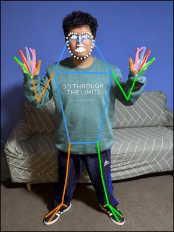
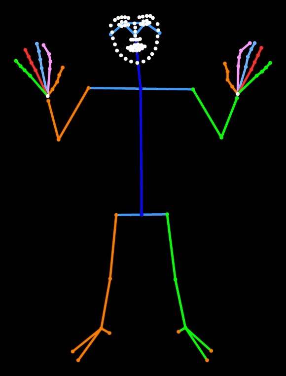

WholeBodyPose
A Unified End-to-End Framework for Sign Language Recognition and Pose-Based Training Data
1Universidad Nacional de Ingeniería, Lima, Peru 2Pontificia Universidad Católica del Perú 3Marist University, New York, USA
18th International Conference on Machine Vision (ICMV 2025) · Proceedings of SPIE
TL;DR Every pose estimator speaks its own dialect. WholeBodyPose puts RTMPose (RTMW), ViTPose+ and MediaPipe behind one interface that always returns the 133 COCO-WholeBody keypoints (body, feet, face, both hands), plus the video pipeline, temporal filtering (NLMS) and visualization needed to turn raw sign language videos into training-ready pose sequences.
Abstract
Sign language recognition systems require high-quality, temporally consistent pose estimation data for effective training. However, existing approaches suffer from inconsistent output formats across different pose estimation models, inadequate temporal filtering, and a lack of standardized preprocessing pipelines. We present WholeBodyPose, an end-to-end framework that unifies multiple state-of-the-art pose estimation models (MediaPipe, RTMPose, ViTPose) under a standardized COCO-133 format. Our framework addresses the critical gaps identified in recent work, providing researchers with a consistent interface to generate high-quality training data.
We provide a modular architecture that supports the easy integration of new pose estimation models, including preprocessing pipelines from raw video input to training-ready keypoint sequences, quality control mechanisms, and visualization tools. Additionally, our library is optimized for real-time use cases, enabling seamless integration into live inference pipelines and interactive sign language systems. This capability makes it suitable not only for research and training, but also for deployment in production-level applications. Our open-source library democratizes access to high-quality pose-based sign language recognition research and establishes a new standard for preprocessing pipelines in this domain.
Keywords: Sign Language Recognition, Pose Estimation, Framework, Keypoint Filtering, Real Time Processing
Key contributions
-
One API, three backends
MediaPipe, RTMPose and ViTPose behind the same call:
predict(frame)returns keypoints and confidence scores, so switching backend needs no code changes. -
COCO-133 standardization
Heterogeneous outputs aligned to the 133-keypoint COCO-WholeBody indexing (17 body, 6 feet, 68 face, 42 hands), optionally extended with virtual chest and mid-hip points (135).
-
Video to training-ready sequences
A complete preprocessing pipeline from raw video to keypoint sequences, with image enhancement for poor lighting, quality control, real-time NLMS smoothing and visualization.
-
Validated on ISLR benchmarks
Pose versions of six ISLR benchmarks (five public datasets), and consistent accuracy gains for Pose-TGCN, GCN-BERT, SILT and SPOTER trained from scratch on WholeBodyPose keypoints.
Pipeline
From a raw video to a pose sequence a recognizer can train on, with the same output whichever backend runs.
float32 pixel coordinates in COCO-WholeBody order; undetected keypoints are (0, 0) with score 0. The video pipeline runs at a chosen processing FPS, writes a browser-playable overlay and saves the sequence with its scores and FPS.Keypoint layouts


Paper, Figure 1. The DrawerPose renderer draws every backend with the same colour coding and skeletal links; the OpenPose-135 mode adds virtual chest and mid-hip points.
Backends
Default settings reproduce the paper; any backend argument can be overridden, e.g. PoseEstimator("rtmpose", mode="lightweight").
| Backend | Model | People | Runs on | Install extra |
|---|---|---|---|---|
rtmpose | YOLOX-m + RTMW-x 384×288 (OpenMMLab) | multi | ONNX Runtime CPU / CUDA | [rtmpose] (+ [gpu]) |
vitpose | ViTPose+ huge/large/base/small, full-frame top-down | single | PyTorch CPU / CUDA | [vitpose] |
mediapipe | BlazePose heavy + Hands + Face Mesh | single | CPU | [mediapipe] |
Results
Replacing the original pose inputs of four ISLR models with WholeBodyPose (RTMPose, 135 keypoints) improves accuracy on WLASL100 for every model, all trained from scratch on pose only.
| Method | Per-instance | Per-class | Δ Top-1 | ||
|---|---|---|---|---|---|
| Top-1 | Top-5 | Top-1 | Top-5 | ||
| Pose-TGCN | 55.43 | 78.68 | – | – | |
| + WholeBodyPose | 58.14 | 82.58 | 59.22 | 83.58 | +2.71 |
| GCN-BERT | 60.15 | 83.98 | – | – | |
| + WholeBodyPose | 66.67 | 91.47 | 68.15 | 92.08 | +6.52 |
| SILT | 62.79 | – | – | – | |
| + WholeBodyPose | 66.67 | 84.88 | 68.15 | 85.72 | +3.88 |
| SPOTER | 63.18 | – | – | – | |
| + WholeBodyPose | 67.05 | 86.43 | 67.47 | 87.42 | +3.87 |
Quick start
pip install "wholebodypose[all] @ git+https://github.com/CristianLazoQuispe/WholebodyPoseEstimation.git"from wholebodypose import PoseEstimator
est = PoseEstimator("rtmpose") # or "vitpose", "mediapipe"
keypoints, scores = est.predict_image("person.jpg") # (N, 133, 2), (N, 133)
res = est.process_video("sign.mp4", "outputs/") # res["total_keypoints"]: (T, 133, 2)wholebodypose backends # list backends
wholebodypose image data/images/image.jpg -b mediapipe # -> outputs/image_mediapipe.{png,json}
wholebodypose video data/videos/videoTest.mp4 -b rtmpose --fps 15
wholebodypose download # pre-fetch every weightExtras: [rtmpose], [vitpose], [mediapipe], [filters] (NLMS), [video], [gpu]. The core package only needs NumPy and OpenCV; model weights are downloaded on first use from our Hugging Face mirror, with a fallback to the original upstream URLs. More in the README.
Pose datasets
Pose sequences extracted with WholeBodyPose for six isolated sign language recognition benchmarks, on the Hugging Face Hub: CristianLazoQuispe/pose-action-recognition.
| Dataset | Classes | Samples | Language | Split |
|---|---|---|---|---|
| WLASL100 | 100 | 2,038 | American SL | official |
| WLASL300 | 300 | 5,117 | American SL | official |
| MSASL100 | 100 | 5,721 | American SL | official |
| ASL-Citizen | 2,731 | 83,399 | American SL | official |
| LSA64 | 64 | 3,200 | Argentinian SL | signer-independent |
| PUCP-DGI30 | 30 | 715 | Peruvian SL | stratified random |
Demo
Upload a video or an image, pick a backend and get the skeleton overlay plus the keypoints, without installing anything.
The demo runs on a free Hugging Face Space and may take a minute to wake up.
Paper and citation
@inproceedings{lazo2026wholebodypose,
title = {WholeBodyPose: a unified end-to-end framework for sign language recognition and pose-based training data},
author = {Lazo-Quispe, Cristian and Castro-Cruz, Renato and Bejarano, Gissella and Salazar-Espinosa, Mauricio},
booktitle = {Eighteenth International Conference on Machine Vision (ICMV 2025)},
volume = {14114},
pages = {69--79},
year = {2026},
organization = {SPIE}
}Please also cite the backend you use (RTMW, ViTPose++, MediaPipe) and COCO-WholeBody; the entries are in the README.